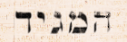
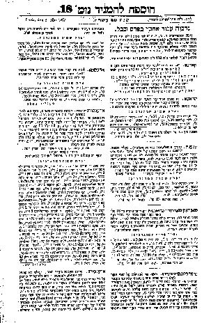

This database is a town index to donor lists published in the Hebrew-language newspaper HaMagid between
1856 and 1900.
By the middle of the 1800’s, the Haskalah [Enlightenment] movement, which had already spread through Western Europe, together with the early stirrings of nationalism, came to influence the Jews of Eastern Europe. One of its results was a revival of the Hebrew language, now to be used not only as a language for prayer and for soferim (holy books), but as a vehicle for expressing the unique culture of the Jewish people.
In 1856, the first Hebrew weekly newspaper, HaMagid [The Declarer], began publication in Lyck, East Prussia (today, the city of Ełk, Poland, 60 miles NW of Białystok). In 1890, it was published in Berlin, and from 1892 until its demise in 1903, was published in Kraków and Vienna. During its last decade, it would be called HaMagid L’Yisrael [The Declarer to Israel].
HaMagid contained extensive news reports from Jewish communities around the world, as well as general world news, critical historical essays, poetry, book reviews, business advertisements and personal notices. Its readership was to be found throughout the Pale of Settlement, as well as in Western Europe. (For more information about HaMagid and other Hebrew newspapers, see my article, "Early Hebrew Newspapers" in Landsmen, vol. 4, nos. 2/3, Fall/Winter 1993/94).
During its years of publication, HaMagid made numerous appeals to its subscribers for nedavot (donations) to help those in need. Sometimes the appeals were to help support Jewish settlement in Eretz Yisrael (Israel); other times for famine relief in Persia or to aid a shtetl devastated by fire. On other occasions, the donations were to fund the publication of Jewish books or help provide for individuals in distress.
In response to these appeals, HaMagid’s subscribers, who resided primarily in cities and shtetls in Eastern and Western Europe, took up collections. Often, one or two subscribers would solicit others in the community, though, sometimes, in large cities, formal committees would be constituted to do the collecting. The collected money, as well as individual contributions, was then sent on to HaMagid for disbursement. In subsequent issues, a few columns (sometimes, several pages) would be devoted to listing the names of the contributors.
The names of contributors published in the pages of HaMagid are in two groupings.
Misc. Donor Lists: The first group, which I call Misc. Donor Lists, consists of contributors who, on their own, sent in a donation in response to a specific appeal. Usually, the heading "Nedavot" (donations), is found on the page, followed by a list of contributors. These names are written in Hebrew or Yiddish and, occasionally, German. The majority of these names contain their full given name followed by their surname. Sometimes, only the first initial of their given name is printed, followed by their surname. Only rarely do traditional Hebrew names appear (given name followed by given name of father). The majority of the donations are from men, though female names are found as well. Sometimes the name is followed by a town of origin and may also note the specific amount which was contributed. For the most part, these names are not listed in alphabetical order. Instead, they seem to be organized by the date of their contribution’s arrival at the HaMagid office. These donor lists appear in approximately 200 issues of HaMagid, and comprise thousands of names.
Shtetl Donor Lists: The second group, which I call Shtetl Donor Lists, consists of contributors from a single location. Usually, the heading, "Nedavot" appears on the page. This is followed by the name of the city or shtetl, usually in bold, written in Hebrew or Yiddish and, occasionally, German. In various issues, over the years, the name of a town may appear with slightly different spellings, (i.e. Mikolintze, Mikolitzin). Sometimes the shtetl name is followed by the country in which it was found, or by the name of a nearby river, city or district. For the most part, the shtetls are listed in Hebrew alphabetical order. Sometimes, last minute arrivals, once the page had already been typeset, were placed at the ends of the columns. (This is especially true for large cities, which often had several groups sending in contributions).
Approximately two thousand "Shtetl Donor Lists" appear in HaMagid over a forty-year period, and comprise tens of thousands of names. (The number of different shtetls which appear in these lists is around one thousand, since some cities made frequent contributions, and thus, their names appear in several issues). The majority of the contributions came from localities in Eastern Europe, though in certain years, Western European cities are listed, as well as towns in South Africa, Sweden, England, Israel, South America and the U.S.A.
In some cases, the shtetl name is followed by a few brief sentences, which had been sent in by the collector(s) of funds. These might consist of a short description of the town (sometimes of its holy leaders), and/or a few pious statements concerning their community’s response to the appeal.
Next, the list of contributors from the town is printed. These names are written in Hebrew or Yiddish (occasionally German). The majority of these names contain their full given name followed by their surname. As with the names in the "Misc. Donor Lists", there are times when only the first initial of their given name is printed, followed by their surname. Only rarely are their given names printed followed by their father’s given name. The majority of the donations are from men, though female names do appear. The names are rarely listed alphabetically, but rather seem to be organized by the order in which their contribution was collected. Sometimes the names are grouped by the amounts of their contributions. Frequently, the name is followed by the amount contributed. Occasionally the contributor is listed as coming from another town.

A sample page from HaMagid:
Supplement to No. 18, May 8th 1872, page 219.Click on the image for a larger view.
A "Misc. Donor List" is found in the first paragraph in the right column.
The "Shtetl Donor Lists" are found beginning with the second paragraph of the right column: Kovno (today: Kaunas, Lithuania), Kraków, Egeg near Ipolyszög (today: Hokove, Slovakia, 20 miles WNW of Balassagyarmat, Hungary), Mondok-Marmuroish (Mándok, Hungary), and New Orleans in America. In the left column: Odessa, and Orenburg in Russia.
The donor lists, as secondary source material, have modest utility for genealogical research. Their primary use is in helping to substantiate or reveal that a given individual was living in or near a particular location in a specific year. In some cases, the Donor Lists may disclose donors with identical surnames living in or near-by the same town. In other cases, the amount of money that an individual contributed may help to reconstruct their economic standing. For those writing histories of family shtetls, the Donor Lists can be used to help reconstruct some of the shtetl population in a given year. Finally, as of this writing (2006), the Donor Lists may make known towns with small Jewish populations that have not heretofore been listed or cataloged.
One must be careful, however, about reaching specious conclusions from the meager data which the Donor Lists provide. Since these were voluntary donations, the exclusion of an individual’s name in a list, cannot be used as an indication of their absence in a given community. Nor can the inclusion of an individual under the name of a particular town be used as an absolute indication that they dwelt there. At best, it indicates geographic proximity and possible residency. Also, while the contribution of a large sum might indicate some indication of wealth, the contribution of a small one does not necessarily indicate modest means. Finally, though individuals with the same surname may be found in a given town, it does not automatically follow that they were related. Only rarely are individuals in the Donor Lists identified as a son, wife or son-in-law of another.
This database contains over 2,000 entries, one for each "Shtetl Donor List" and "Misc. Donor List" published in HaMagid from 1856 to 1900. The entries are listed by the shtetl name. There are no surnames anywhere in this database, nor the names of any individuals. This is a town index, and an index to lists of miscellaneous donors
This database allows a search to be made for "Shtetl Donor Lists": to see if contributions for appeals made by HaMagid were received from a particular town or city, and to identify the specific issue and page number(s) in which the contributors are listed. This database also allows a search to be made for "Misc. Donor Lists": to identify the specific issue and page number(s) in which the lists of these contributors occur.
Once the specific issue and page number(s) are found, then a copy of the HaMagid pages(s) can be obtained, in order to view the list of contributors (see below).
The database search results contain the following six fields:
There are several options for viewing the pages of HaMagid: the hyperlinks in the database; the images on the JNUL's website; and on microfilm.
The Link field in the database search results pages hyperlinks to the "Historic Hebrew Newspapers" website, created by The Jewish National and University Library in Jerusalem, and the David and Fela Shapell Family Digitization Project. The JNUL website has scanned in all 19,000+ pages of HaMagid for 1856-1903, and allows the user to scroll through all the images of the pages.
Clicking on the hyperlink in the database search results page will bring up Java-based viewer software, containing the images of that issue of HaMagid. The link will take you to the front page of the volume number. After the first page of the issue appears on the screen, you can then scroll through the pages of the issue, and look at the top or bottom of the screen to find the page number for which you are looking. A minimal familiarity with Hebrew will allow you to read the town names, and then the names of individual contributors which appear in HaMagid. To return to the Nedavot Database, do not click on the close screen button, rather, click on the "Back" button at the top of your browser.
Rather than go to a specific issue through the hyperlink provided in the database (see above), it is also possible to go to the Jewish National and University Library's "Historic Hebrew Newspapers" website directly: http://jnul.huji.ac.il/dl/newspapers/eng.html.
The JNUL's "Historic Hebrew Newspapers" website has scanned in all 19,000+ pages of HaMagid for 1856-1903, and allows the user to pick the year, month and day of a HaMagid issue, and then to scroll through the images of the pages of that issue.
Most of the website is in Hebrew, so you do need a minimal familiarilty with Hebrew to use the website (as well as to read the pages of HaMagid!).
To find a particular issue of HaMagid, go to the "Historic Hebrew Newspapers" website, and click on the HaMagid name. When the HaMagid screen comes up, click on the top right-hand button, which will take you to the secular date calendar grid. Next, click on the year and month for which you are searching. Finally, click on the day of the month. This will bring up the Java-based viewer software, containing the images of that issue. When the issue appears on the screen, look at the top or bottom of the screen to find the page number for which you are looking.
Alternatively, microfilm copies (and, in some cases, hard copies) of HaMagid are available by visiting (or through inter-library loan from) the following libraries:
- Brown University, Providence, RI
- Columbia University, New York, NY
- Cornell University, Ithaca, NY
- Hebrew College, Brookline, MA
- Harvard University, Cambridge, MA
- Hebrew Union College, Cincinnati, OH
- Jewish National and University Library, Jerusalem, Israel
- Jewish Theological Seminary, New York, NY
- New York Public Library, New York, NY
- Northwestern University, Chicago, IL
- Stanford University, Palo Alto, CA
- University of Ann Arbor, Ann Arbor, MI
- University of California, Berkeley, CA
- University of Judaism, Los Angeles, CA
- University of Southern California, Los Angeles, CA
- Washington University, St. Louis, MO
- Yale University, New Haven, CT
Make sure to check the "Comments" section of each search, to see if a pagination or date misprint is found for a given issue; to see if a town name appears more than once on a specific page; or to see if an added geographical note is present which can help determine the town’s location.
For the most part, literal transcriptions of the shtetl names appear in this database. The letter Aleph (א) is rendered as “a” or “o”, Ayin (ע) as “e”, Yud (י) as “i”, Aleph followed by Yud (אי) as “ai”. Since, as mentioned above, it was not uncommon for a shtetl name to be spelled differently over the years in various issues, a number of variant spellings for the same locale will be found. Also note that all of these names are 19th century names, and will not necessarily be the towns' current names.
For example, the Polish city of Kraków is variously rendered in this database as Crakov, Crakow, Kracow, Krako, Krakov, Krakow, and Kroko. The Ukrainian city of L'viv is rendered as Lvov, Lvuv, Lemberg, Lemburg and Limburg. Bohorodchany appears as Bohodoshani, Bohorodshani, Bohorodshoni, Bohorodtani, and Bohorodtshoni. So be sure to check under various possibilities.
In some cases, the spelling of a town's name has been unfortunately altered, due to unclear handwriting in the subscriber's original contribution letter; typesetting errors on the part of the printer; and transcription mistakes, caused by eye fatigue as well as unclear microfilm. If the town you are searching for does not appear in the database, you might want to try the town name with variant spellings based on the possibility of a transcription error of Hebrew letters, such as ו/ז (vav/zayin); ד/ר (daled/resh); ג/נ (gimel/nun); and פ/כ (peh/chaf).
To search for those issues of HaMagid which contain lists of miscellaneous names: Select "Town" in the Data Type pulldown, select "Starts With" in the "Search Type" pulldown, and then enter the word "Misc".
While I have attempted to be as meticulous and scrupulous as possible, it is inevitable, during the transcription of thousands of shtetl names, volume numbers and page numbers, that a mistake or two has crept in, here and there. Please let me know if you find one, so I can make the correction:
< Rabjamarx@aol.com >.
When Marlene Silverman, the founder and editor of Landsmen, asked me over a decade ago, to kindly help in translating “a few” donor lists from HaMagid, neither she nor I knew that I would soon, thereafter, decide to create an index to all of HaMagid’s 19th Century issues. My scrolling through some 19,000 pages of HaMagid over a ten year period, was taken on as a genealogical labor of love, in gratitude to all those in our Jewish genealogical community who have spent thousands of hours so that others might benefit from their work. In my thirty years of genealogical research, I have benefited enormously from their books, journals, periodicals, maps, gazetteers, onomastics, repository guides, finding aids, and reference works. This work is my modest thank you to them.
My thanks also, here in Los Angeles, to Harvey Horowitz, at the Hebrew Union College Library and to Rick Burke, at The University of Judaism Library, for all their research help.
Finally, I dedicate this work to Walter Benson Miller (1920-2004), my 6th or 7th cousin once removed, friend, and genealogy partner for two decades. May his memory be for a blessing.
Jeffrey A. Marx
February 2006.
{kind=link}